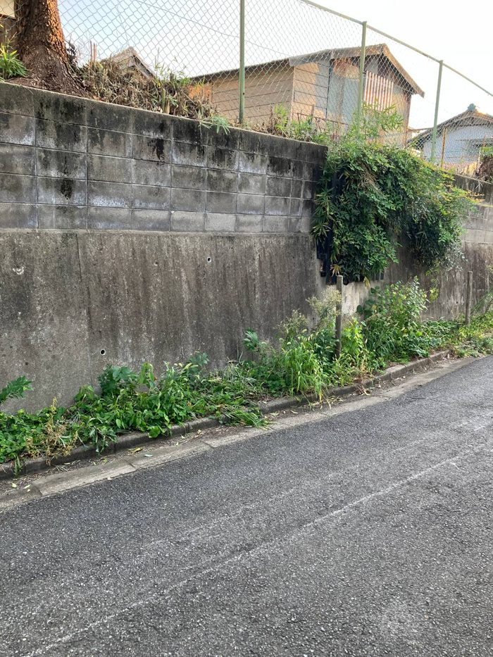
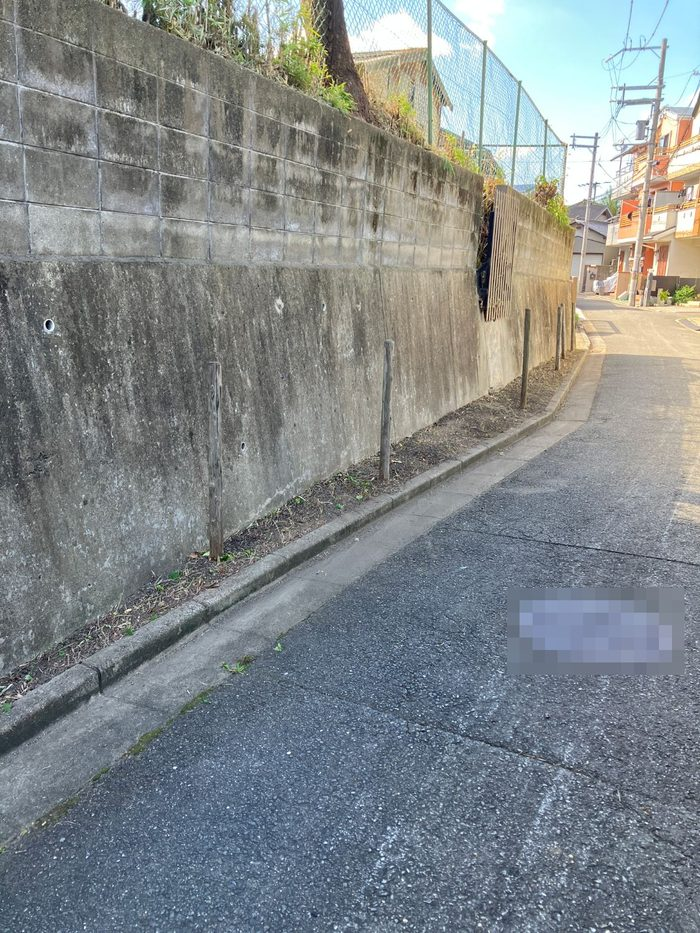

こんにちは、まっさんです。
業者さんに神社の草刈りをお願いして、これで秋祭りの準備も一段落。そう思っていたところに、指摘が入りました。
言われて見に行ってみると、たしかに神社の裏手、道路沿いの雑草が伸び放題。境内の中ばかり気にしていて、外側はまったく頭にありませんでした。
正直、ゾッとしました。お祭りの日は、たくさんの人がこの道を通って神社に来ます。気づかないまま当日を迎えていたら、と思うと冷や汗ものです。
業者さんにもう一度お願いする時間はありません。そこで、班長さんたちのグループLINEで「神社裏の草刈りを手伝ってもらえませんか」と呼びかけました。
急なお願いにもかかわらず、手を挙げてくれる方がいました。ただ、急な話なので全員の日時を合わせるのは難しく、それぞれができる時間帯に少しずつ刈ってもらう形にしました。


道路際がすっきりして、これなら気持ちよくお客さんを迎えられます。
自分ひとりで準備していると、どうしても見えていないところが出てきます。今回も、指摘してくれた方がいなければ、きっと当日まで気づいていませんでした。
いよいよ明日から秋祭りです。
ほな、また。